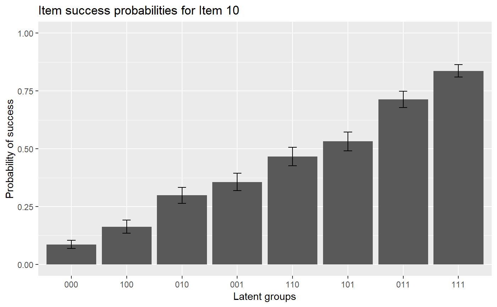
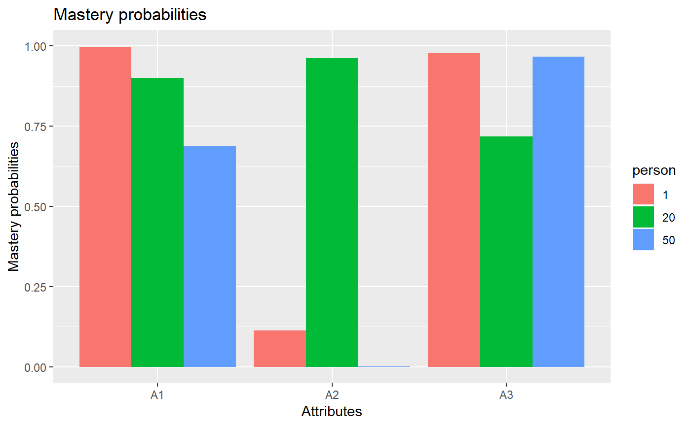

vignettes/OnlineExercises/LLM_example.Rmd
LLM_example.Rmdlibrary(GDINA)## ==============================================
## GDINA Package for Cognitive Diagnosis Modeling
## Version 2.1.16 (2018-7-24)
## ==============================================# A simulated data in GDINA package
dat <- sim10GDINA$simdat
Q <- sim10GDINA$simQ
# Fit LLM model
est <- GDINA(dat = dat, Q = Q, model = "LLM")##
Iter = 1 Max. abs. change = 0.37648 Deviance = 12821.161
Iter = 2 Max. abs. change = 0.03626 Deviance = 11987.109
Iter = 3 Max. abs. change = 0.02013 Deviance = 11956.426
Iter = 4 Max. abs. change = 0.01456 Deviance = 11945.322
Iter = 5 Max. abs. change = 0.01108 Deviance = 11938.924
Iter = 6 Max. abs. change = 0.00903 Deviance = 11934.388
Iter = 7 Max. abs. change = 0.00793 Deviance = 11930.909
Iter = 8 Max. abs. change = 0.00700 Deviance = 11928.157
Iter = 9 Max. abs. change = 0.00623 Deviance = 11925.949
Iter = 10 Max. abs. change = 0.00556 Deviance = 11924.169
Iter = 11 Max. abs. change = 0.00497 Deviance = 11922.731
Iter = 12 Max. abs. change = 0.00444 Deviance = 11921.572
Iter = 13 Max. abs. change = 0.00397 Deviance = 11920.640
Iter = 14 Max. abs. change = 0.00354 Deviance = 11919.893
Iter = 15 Max. abs. change = 0.00315 Deviance = 11919.298
Iter = 16 Max. abs. change = 0.00280 Deviance = 11918.825
Iter = 17 Max. abs. change = 0.00249 Deviance = 11918.450
Iter = 18 Max. abs. change = 0.00221 Deviance = 11918.155
Iter = 19 Max. abs. change = 0.00196 Deviance = 11917.923
Iter = 20 Max. abs. change = 0.00174 Deviance = 11917.740
Iter = 21 Max. abs. change = 0.00153 Deviance = 11917.597
Iter = 22 Max. abs. change = 0.00136 Deviance = 11917.485
Iter = 23 Max. abs. change = 0.00120 Deviance = 11917.398
Iter = 24 Max. abs. change = 0.00106 Deviance = 11917.330
Iter = 25 Max. abs. change = 0.00094 Deviance = 11917.277
Iter = 26 Max. abs. change = 0.00083 Deviance = 11917.236
Iter = 27 Max. abs. change = 0.00074 Deviance = 11917.204
Iter = 28 Max. abs. change = 0.00065 Deviance = 11917.179
Iter = 29 Max. abs. change = 0.00057 Deviance = 11917.159
Iter = 30 Max. abs. change = 0.00051 Deviance = 11917.145
Iter = 31 Max. abs. change = 0.00045 Deviance = 11917.133
Iter = 32 Max. abs. change = 0.00039 Deviance = 11917.124
Iter = 33 Max. abs. change = 0.00035 Deviance = 11917.117
Iter = 34 Max. abs. change = 0.00043 Deviance = 11917.111
Iter = 35 Max. abs. change = 0.00026 Deviance = 11917.107
Iter = 36 Max. abs. change = 0.00023 Deviance = 11917.103
Iter = 37 Max. abs. change = 0.00026 Deviance = 11917.101
Iter = 38 Max. abs. change = 0.00019 Deviance = 11917.099
Iter = 39 Max. abs. change = 0.00017 Deviance = 11917.097
Iter = 40 Max. abs. change = 0.00014 Deviance = 11917.096
Iter = 41 Max. abs. change = 0.00015 Deviance = 11917.095
Iter = 42 Max. abs. change = 0.00011 Deviance = 11917.094
Iter = 43 Max. abs. change = 0.00015 Deviance = 11917.094
Iter = 44 Max. abs. change = 0.00018 Deviance = 11917.093
Iter = 45 Max. abs. change = 0.00010 Deviance = 11917.093
Iter = 46 Max. abs. change = 0.00009 Deviance = 11917.093#####################################
#
# Summary Information
#
#####################################
# print estimation information
est## Call:
## GDINA(dat = dat, Q = Q, model = "LLM")
##
## GDINA version 2.1.16 (2018-7-24)
## ===============================================
## Data
## -----------------------------------------------
## # of individuals groups items
## 1000 1 10
## ===============================================
## Model
## -----------------------------------------------
## Fitted model(s) = LLM
## Attribute structure = saturated
## Attribute level = Dichotomous
## ===============================================
## Estimation
## -----------------------------------------------
## Number of iterations = 46
## For the final iteration:
## Max abs change in item success prob. = 0.0001
## Max abs change in mixing proportions = 0.0000
## Change in -2 log-likelihood = 0.0002
## Time used = 0.2886 secs# summary information
summary(est)##
## Test Fit Statistics
##
## Loglik = -5958.55
## AIC = 11987.09 | penalty = 70
## BIC = 12158.86 | penalty = 241.77
## # par = 35
##
## Attribute Prevalence
##
## Level0 Level1
## A1 0.5195 0.4805
## A2 0.4557 0.5443
## A3 0.4698 0.5302AIC(est) #AIC## [1] 11987.09BIC(est) #BIC## [1] 12158.86logLik(est) #log-likelihood value## 'log Lik.' -5958.546 (df=35)deviance(est) # deviance: -2 log-likelihood## [1] 11917.09npar(est) # number of parameters## No. of total parameters = 35
## No. of item parameters = 28
## No. of population parameters = 7nobs(est) # number of observations## [1] 1000# discrimination indices
extract(est, "discrim")## P(1)-P(0) GDI
## Item 1 0.6926831 0.11977006
## Item 2 0.6520349 0.10545131
## Item 3 0.8081245 0.16267232
## Item 4 0.7985657 0.08428760
## Item 5 0.7649345 0.09070871
## Item 6 0.7466819 0.07414629
## Item 7 0.7095849 0.06580467
## Item 8 0.7964574 0.07915868
## Item 9 0.7146732 0.06127722
## Item 10 0.7499557 0.05430781#####################################
#
# structural parameters
#
#####################################
coef(est) # item probabilities of success for each reduced latent class## $`Item 1`
## P(0) P(1)
## 0.2171 0.9098
##
## $`Item 2`
## P(0) P(1)
## 0.1061 0.7581
##
## $`Item 3`
## P(0) P(1)
## 0.0886 0.8967
##
## $`Item 4`
## P(00) P(10) P(01) P(11)
## 0.0720 0.3393 0.5039 0.8706
##
## $`Item 5`
## P(00) P(10) P(01) P(11)
## 0.0067 0.1481 0.1167 0.7717
##
## $`Item 6`
## P(00) P(10) P(01) P(11)
## 0.2393 0.8323 0.8163 0.9859
##
## $`Item 7`
## P(00) P(10) P(01) P(11)
## 0.0968 0.4548 0.3486 0.8064
##
## $`Item 8`
## P(00) P(10) P(01) P(11)
## 0.0399 0.2968 0.3344 0.8363
##
## $`Item 9`
## P(00) P(10) P(01) P(11)
## 0.0843 0.3488 0.4058 0.7990
##
## $`Item 10`
## P(000) P(100) P(010) P(001) P(110) P(101) P(011) P(111)
## 0.0865 0.1627 0.2986 0.3563 0.4665 0.5320 0.7135 0.8364coef(est, withSE = TRUE) # item probabilities of success & standard errors## $`Item 1`
## P(0) P(1)
## Est. 0.2171 0.9098
## S.E. 0.0265 0.0236
##
## $`Item 2`
## P(0) P(1)
## Est. 0.1061 0.7581
## S.E. 0.0229 0.0249
##
## $`Item 3`
## P(0) P(1)
## Est. 0.0886 0.8967
## S.E. 0.0222 0.0212
##
## $`Item 4`
## P(00) P(10) P(01) P(11)
## Est. 0.0720 0.3393 0.5039 0.8706
## S.E. 0.0167 0.0358 0.0341 0.0257
##
## $`Item 5`
## P(00) P(10) P(01) P(11)
## Est. 0.0067 0.1481 0.1167 0.7717
## S.E. 0.0025 0.0266 0.0284 0.0342
##
## $`Item 6`
## P(00) P(10) P(01) P(11)
## Est. 0.2393 0.8323 0.8163 0.9859
## S.E. 0.0395 0.0340 0.0302 0.0046
##
## $`Item 7`
## P(00) P(10) P(01) P(11)
## Est. 0.0968 0.4548 0.3486 0.8064
## S.E. 0.0189 0.0359 0.0321 0.0276
##
## $`Item 8`
## P(00) P(10) P(01) P(11)
## Est. 0.0399 0.2968 0.3344 0.8363
## S.E. 0.0112 0.0380 0.0342 0.0321
##
## $`Item 9`
## P(00) P(10) P(01) P(11)
## Est. 0.0843 0.3488 0.4058 0.7990
## S.E. 0.0168 0.0315 0.0332 0.0271
##
## $`Item 10`
## P(000) P(100) P(010) P(001) P(110) P(101) P(011) P(111)
## Est. 0.0865 0.1627 0.2986 0.3563 0.4665 0.5320 0.7135 0.8364
## S.E. 0.0179 0.0284 0.0341 0.0374 0.0406 0.0404 0.0359 0.0270coef(est, what = "delta") # delta parameters## $`Item 1`
## d0 d1
## -1.2824 3.5939
##
## $`Item 2`
## d0 d1
## -2.1312 3.2737
##
## $`Item 3`
## d0 d1
## -2.3311 4.4922
##
## $`Item 4`
## d0 d1 d2
## -2.5566 1.8904 2.5721
##
## $`Item 5`
## d0 d1 d2
## -4.9916 3.2420 2.9674
##
## $`Item 6`
## d0 d1 d2
## -1.1568 2.7585 2.6485
##
## $`Item 7`
## d0 d1 d2
## -2.2332 2.0520 1.6080
##
## $`Item 8`
## d0 d1 d2
## -3.1819 2.3194 2.4935
##
## $`Item 9`
## d0 d1 d2
## -2.3854 1.7611 2.0041
##
## $`Item 10`
## d0 d1 d2 d3
## -2.3575 0.7195 1.5036 1.7662coef(est, what = "delta", withSE = TRUE) # delta parameters## $`Item 1`
## d0 d1
## Est. -1.2824 3.5939
## S.E. 0.1560 0.3653
##
## $`Item 2`
## d0 d1
## Est. -2.1312 3.2737
## S.E. 0.2409 0.3025
##
## $`Item 3`
## d0 d1
## Est. -2.3311 4.4922
## S.E. 0.2744 0.3914
##
## $`Item 4`
## d0 d1 d2
## Est. -2.5566 1.8904 2.5721
## S.E. 0.2498 0.2509 0.2464
##
## $`Item 5`
## d0 d1 d2
## Est. -4.9916 3.2420 2.9674
## S.E. 0.3669 0.3439 0.2760
##
## $`Item 6`
## d0 d1 d2
## Est. -1.1568 2.7585 2.6485
## S.E. 0.2168 0.3195 0.2918
##
## $`Item 7`
## d0 d1 d2
## Est. -2.2332 2.0520 1.6080
## S.E. 0.2160 0.2184 0.2035
##
## $`Item 8`
## d0 d1 d2
## Est. -3.1819 2.3194 2.4935
## S.E. 0.2924 0.2728 0.2828
##
## $`Item 9`
## d0 d1 d2
## Est. -2.3854 1.7611 2.0041
## S.E. 0.2182 0.2097 0.2020
##
## $`Item 10`
## d0 d1 d2 d3
## Est. -2.3575 0.7195 1.5036 1.7662
## S.E. 0.2271 0.1857 0.1974 0.1883coef(est, what = "gs") # guessing and slip parameters## guessing slip
## Item 1 0.2171 0.0902
## Item 2 0.1061 0.2419
## Item 3 0.0886 0.1033
## Item 4 0.0720 0.1294
## Item 5 0.0067 0.2283
## Item 6 0.2393 0.0141
## Item 7 0.0968 0.1936
## Item 8 0.0399 0.1637
## Item 9 0.0843 0.2010
## Item 10 0.0865 0.1636coef(est, what = "gs", withSE = TRUE) # guessing and slip parameters & standard errors## guessing slip SE[guessing] SE[slip]
## Item 1 0.2171 0.0902 0.0265 0.0236
## Item 2 0.1061 0.2419 0.0229 0.0249
## Item 3 0.0886 0.1033 0.0222 0.0212
## Item 4 0.0720 0.1294 0.0167 0.0257
## Item 5 0.0067 0.2283 0.0025 0.0342
## Item 6 0.2393 0.0141 0.0395 0.0046
## Item 7 0.0968 0.1936 0.0189 0.0276
## Item 8 0.0399 0.1637 0.0112 0.0321
## Item 9 0.0843 0.2010 0.0168 0.0271
## Item 10 0.0865 0.1636 0.0179 0.0270# Estimated proportions of latent classes
coef(est,"lambda")## p(000) p(100) p(010) p(001) p(110) p(101) p(011) p(111)
## 0.0946 0.0978 0.1522 0.1270 0.1253 0.1364 0.1457 0.1211# success probabilities for each latent class
coef(est,"LCprob")## 000 100 010 001 110 101 011 111
## Item 1 0.2171 0.9098 0.2171 0.2171 0.9098 0.9098 0.2171 0.9098
## Item 2 0.1061 0.1061 0.7581 0.1061 0.7581 0.1061 0.7581 0.7581
## Item 3 0.0886 0.0886 0.0886 0.8967 0.0886 0.8967 0.8967 0.8967
## Item 4 0.0720 0.3393 0.0720 0.5039 0.3393 0.8706 0.5039 0.8706
## Item 5 0.0067 0.0067 0.1481 0.1167 0.1481 0.1167 0.7717 0.7717
## Item 6 0.2393 0.8323 0.8163 0.2393 0.9859 0.8323 0.8163 0.9859
## Item 7 0.0968 0.4548 0.0968 0.3486 0.4548 0.8064 0.3486 0.8064
## Item 8 0.0399 0.2968 0.3344 0.0399 0.8363 0.2968 0.3344 0.8363
## Item 9 0.0843 0.0843 0.3488 0.4058 0.3488 0.4058 0.7990 0.7990
## Item 10 0.0865 0.1627 0.2986 0.3563 0.4665 0.5320 0.7135 0.8364#####################################
#
# person parameters
#
#####################################
head(personparm(est)) # EAP estimates of attribute profiles## A1 A2 A3
## [1,] 1 0 1
## [2,] 1 1 1
## [3,] 0 1 1
## [4,] 1 1 1
## [5,] 0 0 1
## [6,] 1 0 0head(personparm(est, what = "MAP")) # MAP estimates of attribute profiles## A1 A2 A3 multimodes
## 1 1 0 1 FALSE
## 2 1 1 1 FALSE
## 3 0 1 1 FALSE
## 4 1 1 1 FALSE
## 5 0 0 1 FALSE
## 6 1 0 0 FALSEhead(personparm(est, what = "MLE")) # MLE estimates of attribute profiles## A1 A2 A3 multimodes
## 1 1 0 1 FALSE
## 2 1 1 1 FALSE
## 3 0 1 1 FALSE
## 4 1 1 1 FALSE
## 5 0 0 1 FALSE
## 6 1 0 0 FALSE#####################################
#
# Plots
#
#####################################
#plot item response functions for item 10
plot(est, item = 10)plot(est, item = 10, withSE = TRUE) # with error bars
#plot mastery probability for individuals 1, 20 and 50
plot(est, what = "mp", person = c(1, 20, 50))
#####################################
#
# Advanced elements
#
#####################################
head(indlogLik(est)) # individual log-likelihood## [,1] [,2] [,3] [,4] [,5] [,6]
## [1,] -16.225050 -7.807772 -13.432913 -9.816964 -7.351061 -3.343466
## [2,] -23.347781 -14.930503 -14.039925 -13.972335 -7.958073 -7.498837
## [3,] -17.637185 -14.149201 -10.565347 -10.595915 -9.412789 -9.051711
## [4,] -21.244496 -13.546733 -14.952839 -11.631151 -9.590502 -5.877168
## [5,] -8.246458 -9.220485 -12.099941 -3.604614 -15.409395 -6.522422
## [6,] -7.947488 -6.230995 -7.803846 -10.211659 -8.422779 -10.438947
## [,7] [,8]
## [1,] -9.512172 -5.429567
## [2,] -7.151824 -3.069220
## [3,] -6.011421 -6.858112
## [4,] -7.826838 -4.463749
## [5,] -9.945442 -15.254144
## [6,] -12.555362 -15.173543head(indlogPost(est)) # individual log-posterior## [,1] [,2] [,3] [,4] [,5] [,6]
## [1,] -13.377840 -4.9271456 -10.109875 -6.67489552 -4.222122 -0.1300574
## [2,] -20.566246 -12.1155510 -10.782562 -10.89594142 -4.894809 -4.3511033
## [3,] -12.429579 -8.9081792 -4.881913 -5.09345046 -3.923455 -3.4779068
## [4,] -17.307520 -9.5763412 -10.540035 -7.39931619 -5.371797 -1.5739934
## [5,] -5.004653 -5.9452648 -8.382309 -0.06795114 -11.885862 -2.9144190
## [6,] -2.273290 -0.5233806 -1.653820 -4.24260230 -2.466852 -4.3985495
## [,7] [,8]
## [1,] -6.2325366 -2.33540350
## [2,] -3.9378639 -0.04073084
## [3,] -0.3713909 -1.40355228
## [4,] -3.4574371 -0.27981937
## [5,] -6.2712132 -11.76538611
## [6,] -6.4487383 -9.25239056extract(est,"designmatrix") #design matrix## [[1]]
## [,1] [,2]
## [1,] 1 0
## [2,] 1 1
##
## [[2]]
## [,1] [,2]
## [1,] 1 0
## [2,] 1 1
##
## [[3]]
## [,1] [,2]
## [1,] 1 0
## [2,] 1 1
##
## [[4]]
## [,1] [,2] [,3]
## [1,] 1 0 0
## [2,] 1 1 0
## [3,] 1 0 1
## [4,] 1 1 1
##
## [[5]]
## [,1] [,2] [,3]
## [1,] 1 0 0
## [2,] 1 1 0
## [3,] 1 0 1
## [4,] 1 1 1
##
## [[6]]
## [,1] [,2] [,3]
## [1,] 1 0 0
## [2,] 1 1 0
## [3,] 1 0 1
## [4,] 1 1 1
##
## [[7]]
## [,1] [,2] [,3]
## [1,] 1 0 0
## [2,] 1 1 0
## [3,] 1 0 1
## [4,] 1 1 1
##
## [[8]]
## [,1] [,2] [,3]
## [1,] 1 0 0
## [2,] 1 1 0
## [3,] 1 0 1
## [4,] 1 1 1
##
## [[9]]
## [,1] [,2] [,3]
## [1,] 1 0 0
## [2,] 1 1 0
## [3,] 1 0 1
## [4,] 1 1 1
##
## [[10]]
## [,1] [,2] [,3] [,4]
## [1,] 1 0 0 0
## [2,] 1 1 0 0
## [3,] 1 0 1 0
## [4,] 1 0 0 1
## [5,] 1 1 1 0
## [6,] 1 1 0 1
## [7,] 1 0 1 1
## [8,] 1 1 1 1extract(est,"linkfunc") #link functions## [1] "logit" "logit" "logit" "logit" "logit" "logit" "logit" "logit"
## [9] "logit" "logit"sessionInfo()## R version 3.5.1 (2018-07-02)
## Platform: i386-w64-mingw32/i386 (32-bit)
## Running under: Windows 10 x64 (build 17134)
##
## Matrix products: default
##
## locale:
## [1] LC_COLLATE=English_United States.1252
## [2] LC_CTYPE=English_United States.1252
## [3] LC_MONETARY=English_United States.1252
## [4] LC_NUMERIC=C
## [5] LC_TIME=English_United States.1252
##
## attached base packages:
## [1] stats graphics grDevices utils datasets methods base
##
## other attached packages:
## [1] GDINA_2.1.16
##
## loaded via a namespace (and not attached):
## [1] commonmark_1.5 digest_0.6.15 htmltools_0.3.6
## [4] R6_2.2.2 scales_1.0.0 Rsolnp_1.16
## [7] assertthat_0.2.0 rprojroot_1.3-2 grid_3.5.1
## [10] fs_1.2.5 stringr_1.3.1 knitr_1.20
## [13] numDeriv_2016.8-1 munsell_0.5.0 desc_1.2.0
## [16] shinydashboard_0.7.0 pillar_1.3.0 tibble_1.4.2
## [19] compiler_3.5.1 httpuv_1.4.5 mime_0.5
## [22] xml2_1.2.0 labeling_0.3 pkgdown_1.1.0
## [25] roxygen2_6.1.0 later_0.7.3 shiny_1.1.0
## [28] rstudioapi_0.7 ggplot2_3.0.0 MASS_7.3-50
## [31] plyr_1.8.4 stringi_1.2.4 magrittr_1.5
## [34] rmarkdown_1.10 evaluate_0.11 gtable_0.2.0
## [37] rlang_0.2.1 colorspace_1.3-2 promises_1.0.1
## [40] yaml_2.2.0 tools_3.5.1 alabama_2015.3-1
## [43] parallel_3.5.1 truncnorm_1.0-8 nloptr_1.0.4
## [46] xtable_1.8-2 lazyeval_0.2.1 crayon_1.3.4
## [49] backports_1.1.2 memoise_1.1.0 Rcpp_0.12.18